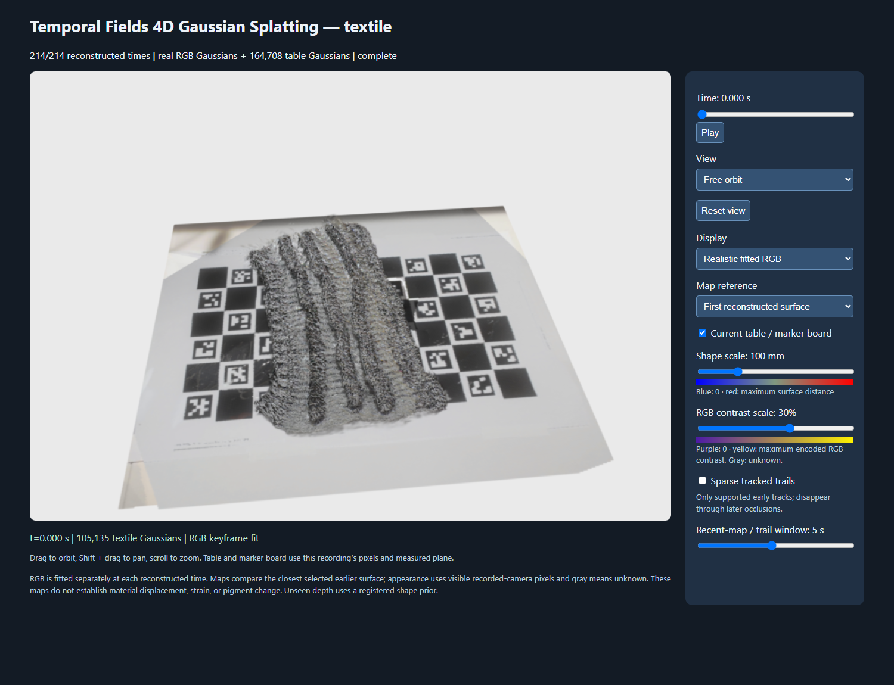

STAGE 36 · ready · 2026-10-08T22:26:14.4226828Z
Interactive RGB viewer ready for review
Leave the completed viewer on realistic fitted RGB, first fitted time, current_table05, elevated iPhone-side free orbit. Press Play to review the full214-state sequence, or switch first/recent-reference surface/appearance maps. The selected SuperSplat animation and full-quality archives are saved locally; no Git action or source publication occurred.

Genuine local browser screenshot; see accompanying capture metadata